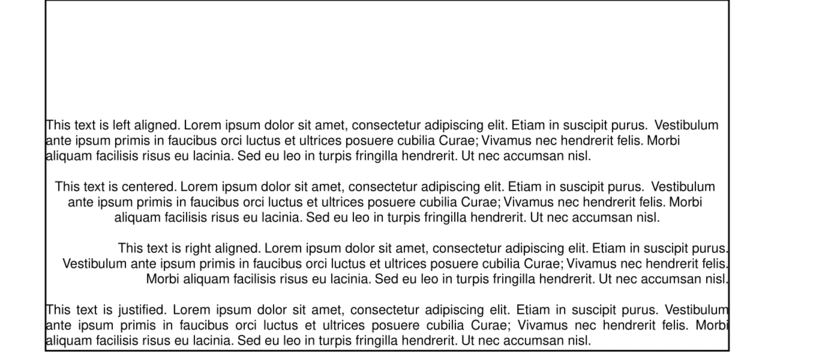

Text in PDFKit
The basics
PDFKit makes adding text to documents quite simple, and includes many options to customize the display of the output. Adding text to
a document is as simple as calling the text method.
Internally, PDFKit keeps track of the current X and Y position of text as it is added to the document. This way, subsequent calls to
the text method will automatically appear as new lines below the previous line. However, you can modify the position of
text by passing X and Y coordinates to the text method after the text itself.
If you want to move down or up by lines, just call the moveDown or moveUp method with the number of lines you'd
like to move (1 by default).
Line wrapping and justification
PDFKit includes support for line wrapping out of the box, and it is as simple to enable as setting the width option to the
width that the text should be wrapped to. If you set the height option, the
text will be clipped to the number of lines that can fit in that height.
Once you've enabled line wrapping, you can choose a text justification. There are four options: left (the default),
center, right, and justify. They work just as they do in your favorite word processor, but
here is an example showing their use.
The output of this example, looks like this:
Text styling
PDFKit has many options for controlling the look of text added to PDF documents. They are enumerated below.
indent- the amount in PDF points (72 per inch) to indent each paragraph of textparagraphGap- the amount of space between each paragraph of textlineGap- the amount of space between each line of textfill- whether to fill the text (trueby default)stroke- whether to stroke the text
Additionally, the fill and stroke color and opacity methods described in the vector graphics section are applied to text content as well.
Fonts
The PDF format defines 14 standard fonts that can be used in PDF documents (4 styles of Helvetica, Courier, and Times, as well as
Symbol and Zapf Dingbats), but also allows fonts to be embedded right in the document. PDFKit supports embedding font files in the
TrueType (.ttf), TrueType Collection (.ttc), and Datafork TrueType (.dfont) formats.
To change the font used to render text, just call the font method. If you are using a standard PDF font, just pass
the name to the font method. Otherwise, pass the path to the font file, and if the font is a collection font
(.ttc and .dfont files), meaning that they contain multiple styles in the same file, you should pass
the name of the style to be extracted from the collection.
Here is an example showing how to set the font in each case.
The output of this example looks like this:

Another nice feature of the PDFKit font support, is the ability to register a font file under a name for use later rather than entering the path to the font every time you want to use it.
That's about all there is too it for text in PDFKit. Let's move on now to images.